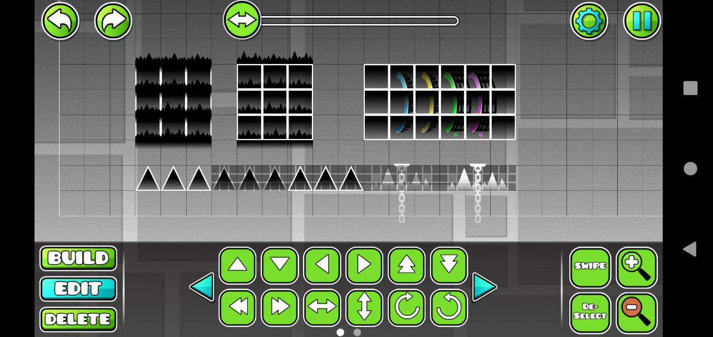

In GD 1.00, the following layers existed (from top to bottom):
Portal - the right part of portals is on the highest layer and renders above all objectsIn each of the layers, the objects that are rendered last take priority (and usually that matches up with their order in the level string)
It's worth noting that this layering system had some changes. In 1.10, the decorative grid block became its own layer between Default and Blending (non-solid black objects from future versions go on this layer). In 1.40, the Ground Spike layer stopped existing and got merged into the Default layer.
